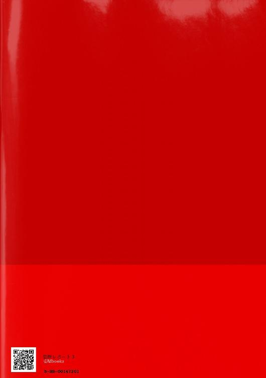

| 禁断レポート３巻 | |
| 新矢イチ | |
| 壱屋books (2017) | |
「今からゲームをしませんか。簡単です、鬼ごっこ。囮はそう――木瀬孝弘」
「今からゲームをしませんか。単純です、鬼ごっこ。囮はそう――木瀬孝弘」
哉太の復讐劇がとうとう幕を開けた。天才科学者（弟）×ネガティブ美人（兄）、禁断の三角関係ラブ。
ガツン!!
「──っ!!」
とっさに伸ばした両腕に凄まじい衝撃が落ちる。腕の中でぐったりとする全裸の青年を見やり、男は眉間にシワを寄せた。
上の階が騒がしいと野次馬気分で見上げたはいいが、まさか人が降ってくるとは思うまい。
帰国して間もないが、日本人も物騒なまねをする。男は妖艶な美貌をわずかに崩し、珍しそうに天を仰いだ。
上階から、ただならぬ男の叫び声が響いている。しゃがれた声で「ゆずき」「ゆずきい」と繰り返し。床を這っているのかズルズルと擦れるような音もする。声は徐々に窓の方に近づいていた。男は青年に目を落とし、早々にバルコニーを後にする。
歳のころは二十歳くらい。ぐったり項垂れて意識がない。口元へほほを寄せる。蚊の鳴くほどだが小さな呼吸が肌をくすぐる。意識はあるようだ。
「フン」
美しいとはいかないが、艶のある白い素肌はしなやかで張りがある。容姿は中の中。どこにでも居そうな普通の青年だ。
年端もいかぬ若者が、高級マンションで豪遊か。感心したい所だがおそらく違う。
暴行か虐待か。痛々しいほど顔が腫れている。白雪のように真っ白な素肌だから、余計に傷が目立っていた。
そこだけじゃない。両手首には拘束のあと。赤紫色の内出血が幾重にもかぶさっている。かなりの長時間、自由を奪われていたようだ。同じ痕跡が足首にもある。
全裸で飛び降りるあたり、彼の不遇についてある程度察しはついていたが......。
「ふん」
ベッドルームへ向かいつつ、なおも観察を続ける。
男性器の大きさは並。やたらと初心な色をしている。
(この歳でペールオレンジの無垢な色か)
揺れるペニスを鼻で笑う。
奇麗にむけてはいるから、性体験はあっても『経験』はないのだろう。彼はずいぶんと若い頃から喘がされる側の人間、つまり性玩具として扱われてきたのではないか。
途中、壁に立てかけた全身鏡に、男の姿が映る。全裸の青年を抱いた大柄の男性が、こちらをのぞきこんでいる。ブロンドの髪を傭人のように七三になでつけ、上流階級の気品を醸すダンヒルの黒いベストスーツが、長い両手足を装飾する。恐ろしく整った涼しげな顔は、この世の不自由を一つも知らないように見えた。
男は鏡ごしに青年を見る。日本人としては年相応なんだろうが、地味で童顔。
過去に男も女も愛した経験はあるが、こういうのは好みじゃない。
「ユズキ、ね」
上階の男の言葉をまねてつぶやくと、謎の青年をベッドに横たえた。
＊
四月某日、月曜日の早朝。
雀のさえずりも久しく聴かないここは、千代田区のビジネス街。今朝も剣呑と憂鬱を顔に張り付けた輩が、競って歩道を闊歩する。
彼らはまるで、陰に咲くアサガオのようだ。今日もまた、朝か夜かも分からぬうちに日が暮れる。会社のために人生を尽くす。今日も長い一日の始まりだ。
ビジネス街の一角に、ひときわ目を引く全面鏡張りの建物がある。『大嫁製薬株式会社』本社ビルだ。
地上十四階建てで、一階は駐車場、二階はロビー兼エントランスという造り。業界王者らしい煌びやかな外装であるが、内部は殺伐とした空気に覆われている。今日はとくに──。
極秘プロジェクトのメンバーが、本日より出社する。
営業戦略課、一課課長の清川茂は、今朝がた届いた報告書──十数枚のファックス用紙を手に、苦虫をかみつぶした顔でオフィスに向かっている。
報告書が、どれもこれも最悪。記入必須項目さえ空白が目立つ。
「カルエバイオサイレンス社の社員総数、不明。総工場数も流通地域も不明......なんじゃこれは」
思わず毒づいたその隣を、数人の女性グループが騒々しく横切る。ゴールデンウィークの予定、バーゲンセールに芸能人ネタ。夢中でおしゃべりを楽しむ彼女たちは、当然の如く横に広がり通路をふさいだ。
香水の残り香が鼻をつく。原色のコーディネートは下品で古臭いし、白髪交じりの茶髪も品がない。
（ったく、オバタリアンめが）
社員証を引っさげた首ヒモは緑色。
これは立場によって色分けされている。赤は管理職、黄色は正社員、緑は契約か派遣社員で、総括して『派遣』と呼ばれている。この顔ぶれ、確か隣の流通部だ。
「けっ。派遣のぶんざいで図々しいんだよ。あいさつくらいしやがれ」
舌打ちと愚痴はしっかりと聞こえたようだ。一斉に「おはようございます」と引きつり笑顔でこちらを向いた。
（クソ、だから派遣は嫌いなんだよ）
清川は無言できびすをかえし、元来た道を逆走する。気にくわないので背を向け、あからさまに無視をしたわけだ。
なによ偉そうにと陰口が聞こえたが、それも無視。それはそうと、オフィスが遠ざかっていく。
本来なら、こんな事をしている場合ではない。早くこの穴だらけの報告書に目を通し、記入者の名前を全員分頭にたたき込まねば。朝礼までに、必ず。
（こいつら全員、いびり倒してやるからな）
久々に重責を担ったが、面倒だからと扱いやすそうなメンツを選んで丸投げしたのがいけなかった。
（......いや、ちゃうか）
この腑抜けた報告書を見れば分かる。彼は社員から愛されてない。普段から部下に目をかけようともしないから、肝心な時にこのような事態に陥るのだ。つまりは自業自得。
とかく、現代の社会は息苦しい。何をするにも不自由極まりないし、少し嫌味を言えばパワハラだと訴えられる。おかげで仕事の全てがつまらなくなった。その証拠に、清川自身が案件の内容をまったく読み込んでいない。
残念ながら、そのマイナス思考だけはオフィス中に浸透しているようだ。
（本当、今の社員は使えねえ......ん？ 『もう二度と来るなと言われた』って何だ？ 何したんだアイツら──）
報告書とにらめっこ、感覚だけで長い通路を渡る。エレベータの手前にさしかかったところ、ドアが開いてまたも人影が立ちふさがった。
「おはようございます、清川課長」
「ん、ああ、おはよう」
清々しいあいさつに思わず返事をする。
書類の束からこそっと相手を確認する。
（あいつ）
男性社員は、軽い会釈のあと背を向けて歩き出す。
グレーのストライプスーツは若者らしい細身のタイプで、シルエットにも気品が満ちている。清川のスーツ姿は、見た目どおりやぼったいオヤジにしか見えないから不思議だ。
黒髪はサラリと軽く、歩くと肩掛けの茶色い鞄と毛先がふわりと揺れた。
「木瀬孝弘」
同じ営戦部で二課の社員だ。同僚の丸岡が管轄だから直接面識はない。が、オフィスの半分で事足りる小さな規模なので、彼の顔に面識はあった。
人見知りの激しい清川も、人物的に好印象だった。穏やかで口調や行動に品があり、先の派遣社員のような攻撃性も感じない。
だから木瀬孝弘の名前と顔は、記憶にもちゃんと残っていた。
球場でボールを追う子供のように顔を上げ下げさせ、一番下に二つ折りにしておいた報告書と後姿を見比べる。
「ああ、やっぱりだ」
一枚だけ秀でて優秀なレポートがあったので、見せしめてやろうと別に持っていたものだ。記入者名には、『木瀬孝弘』と奇麗な字が記されている。
（やはり彼だけは信用できるな。うん）
われながら良い人材を抜擢したものだ。鼻たかだかで非常階段に足をかけて数秒。ふと首をかしげた。
（あいつだけ課が違うのに、なんで今回のメンバーに入ってんだ？ つうか、俺も木瀬を選んだ記憶ねえぞ）
管轄外の社員がプロジェクトに名を連ねるのはおかしいと、ようやく気が付いたのだ。
無論、人事は清川の選別だ。しかしどの記憶の糸をたどっても、彼を抜粋した記憶も理由も動機さえ、ひとつも思い当たらない。
なぜだと考え込んでいる途中、後方からドタドタと足音が。
「あ～やっと見つけた！ 清川課長！」
今度は何だと振り向くと、広報担当の山室梓が血相をかえて走ってくる。
（げ。この女うるさくて苦手なんだよなぁ）
「ちょっと課長、どこ行くんですか！ 用事があるっていうのにもう」
無視を決め込んでいた清川は、ちっと舌打ちで返事をする。
「なんだよ」
「なんだよじゃないですよ！」
ふてぶてしい態度だが、山室はおくせず詰め寄る。
「あなたのせいで、いま社内が大変なことになってるんですよ！」
「──は？」
「ああもう何でもいいから早く！ 早く来てください！」
むりやり非常階段から引きずり出された清川は、山室と共に再び通路を逆走していった。
＊
（柚木と連絡が取れない）
『ただいま電話にでることができません。御用の方は──』
手洗い場の隅っこで自動音声を聞きながら、孝弘は今日幾度目かのため息をついた。
昨晩から空き時間を見つけては携帯を鳴らしているが、状況に変化なし。いまさらだが、忙しさにかまけて柚木への連絡を後回しにした事を悔いていた。
（──最悪だ）
まさかとは思うが、柚木の身に何かあったのではないか。
悪い想像が頭を悩ませる。
柚木だからこそ、よけいに不安が募るのだ。
少年期のほとんどを虐待されて育った人だ。トラウマから自傷癖を患っていた過去もある。
背後に人がたつと極端に怖がり、物音ひとつでひどく取り乱す時もあった。その度、柚木にとっての恐怖を探り、窺い、ひとつひとつ排除した。
ある日突然、訳もなく号泣し始める柚木を、「大丈夫」だと赤ちゃんのようにあやしつけながら何度抱きしめただろうか。
元気な声が聞けないと不安になる。
ちゃんと食事はとれているだろうか。仕事には行ってるだろうか。体調は崩していないか。孤独につぶれてはいないだろうか。
過剰な『おせっかい』がすでに友情という言葉では言い訳がつかなくなっている事は、孝弘自身が十分理解している。
友情でも恋愛でもない奇妙な関係は、今年で七年。何度も「君がすき」だと言いかけ、口をつぐんできた。
伝える勇気がなかった。
決して友達以上には思われていないだろうから。
どれだけ傍にいても、柚木は自ら歩み寄ってくれない。触れることはあっても、触れられることはない。問いかけなければ何も話してくれない。いつも気を遣ってばかりで、感情的にさえならない。
一向に縮まらない距離こそ、柚木の気持ちそのものじゃないか。ある時から、そう思うようになった。
（哉太だったら、違ったのかも）
心を開いてくれないのは、哉太じゃないから。哉太なら、素直に悩みを打ち明けたのではないか。
「......だめだ」
哉太、哉太。七年もたったいまでも、見えない影が、劣等感をいたぶり続ける。
どちらとも、一人の男が残した過去の記憶におぼれたまま。柚木は哉太を思い、そして自分は──、
「......」
手洗い場に誰か入ってくる。
男は用を足すわけでもなく、手洗い台へ歩み寄るとピタリと孝弘の右隣に立つ。
「......失礼」
なぜわざわざ隣につけるんだ。
少々訝しく思いながら、肩掛け鞄を手元に寄せた。
背の高い男だ。自分と同じグレーのスーツを纏っている。
線は細いが立ち居振る舞いは堂々と胸を張って風格がある。見ない顔だが、どこの部署だろう？
なぜだか隣の男性に興味を惹かれた。目が反らせない。不可思議で強烈なパワーを感じるのだ。
ネクタイを直しているのか、男は襟口に手を添えじっと下を向いている。あと耳元に光る何かが──。
「......え」
そこで孝弘の視線がピタリと止まった。男は左耳にダイヤのピアスを付けている。〇，一カラットくらいのプラチナで、正方形にキラキラと光る奇麗な宝石だ。
怪訝そうに眉をひそめる理由は、かつて哉太が付けていたものとあまりにも酷似しているから。
「何か」
視線に気づいたのか、男は目線をこちらに向けた。両サイドを刈り上げているせいか、前髪が長い割にはすっきりした印象。少し面長でシャープな顎。薄くて真一文字の唇は冷たげだが、漆黒の瞳だけは人懐っこい雰囲気がある。
「どうかしましたか」
孝宏はようやく見知らぬ男性に魅入る自分に気付いた。
「すみません。少し、知人に似ていて」
「......そうですか」
淡々として抑揚がない、冷静だが、人として味気のない声だ。
（哉太の声じゃない）
脳裏に沸いたありえない可能性を、そくざ否定する。
(哉太かもしれないなんて......。どうかしてる)
彼はもっと早口で、鋭利な刃物のように攻撃的な口調だった。
顔つきや髪の毛の質、なにより瞳の色。──特徴的だったクリスタルブラウンの瞳ではなく、透過性ゼロの漆黒の色をしている。その雰囲気すべてが、記憶の中の人物とは全く異なっていた。
(この人は、哉太じゃない)
「申し訳ありません、僕の人違いでした」
考えれば、ここは職場だ。可能性のかけらをかき集めても、再会の場では決してあるまい。ましてや七年に渡り音信不通の兄弟となると、偶然の再開を考える方が難しい。
「......ふうん。人違い」
男性はなぜか薄ら笑っていた。その仕草が引っかかり、再度男をみる。二人の視線はすぐに絡まった。
「あの......」
視線をうろつかせる孝弘に反して、男は片時も目を反らそうとしない。何を考えているのか、漆黒の瞳はもの言いたげに揺れ、何かを訴えかけている。
穏やかな印象だったそれは、力強い眼差しに変っていた。強さと脆さ、理性と欲望の混ざった危険な目。アンバランスに揺れる感情が、そのまま映し出されていた。
―業務連絡です。営業戦略部、二課の木瀬さん。木瀬孝弘さん。八階第三会議室まで......―
館内を流れるアナウンスが、意識にはっと入りこむ。
「大丈夫ですか」
「あ、はい。すみません──」
「ふうん」とまた気のない返事が聞こえた。
刹那。
背中を衝撃が襲った。
突然伸びた二本の手に両肩をつかまれ、背中からタイルに突き飛ばされた。
もがく間もなく顎を持たれる。次の瞬間。覆いかぶさった強引な熱が、むさぼりつくように孝弘の唇の自由を奪った。
「──！」
これは......なんだ。
意識が追いつかない。弾け散る火花のように、思考は酷く混乱している。
―繰り返します。営業戦略部、二課の木瀬孝弘さん...―
なまぬるい熱気が、かいくぐって口内へ。逃げ惑う舌先を絡めとり、歯型にそってねっとりと這いまわる。
「う......っ」
「アンタって本当最低だわ」
キスの合間に声が漏れる。うって変わり早口で、感情の冷めた低い声。
「そんな簡単に忘れられんだね、俺のこと」
ナイフの切っ先のように鋭く尖った、獰猛な野生動物のようなうなり声だ。
「う...っはぁ──」
キスから解放されるや、膝から崩れ落ちていた。
「久しぶり、兄貴」
「は......、は......っ」
みるみる男の口調と表情が変わっていく。
淡々としていて味気のなかった声色は、早口で刺々しい。
穏やかだった顔も鬼の面をかぶせたように、すうっと人相が一変している。
つり上がった目と笑みの失せた口元。
無骨で攻撃的で冷淡。すれた少年期の面影を思い出し、胸の奥がギシリと唸る。
「何年ぶりかな。奇麗になったよねアンタ」
「哉──っ」
ゆらり。頭上を覆うように、不気味に影がゆれた。男は前屈みに両手をつくと瞬きひとつせず、うすら笑顔で孝弘を見下ろした。スーツの前がはだけ、首かけの社員証がだらりと垂れる。
『小野哉太』
孝弘はただ声もなく、左右に宙を舞うその名前を見つめた。
（おの......かな、た）
オノカナタ
やはり、哉太なのか。
でも名字が違う。だが先ほど確かに、彼は言った。『久しぶり、兄貴』と。
哉太のようで、些細な部分が過去の記憶と一致しない。その奇妙な違和感より先に、名前をどこかで聞いた気がして、孝弘はますます混乱する。
オノ カナタ。
(本当に、哉太、なのか？)
七年前、幾重にもかさねた嘘と裏切りで、傷つけてしまった弟。
その後消息をたち、どこで何をしているかさえ分からなかった。
彼はただ一途に純粋に、孝弘だけを愛してくれた。
流されるまま体を許し、偽りの愛に囚われ、溺れ......、最後は「悪魔」と罵り、孝弘の前から姿を消した。
「まさか、哉太、どうして──」
「さあ、どうしてだろうね」
冷笑を浮かべながら身をかがめ、耳元で囁く。
「俺はただ、アンタを────」
言い終わる間もなく、三度目の館内放送が孝弘を呼んだ。
先程とかわらない。間延びした女の声だ。
―繰り返します......、木瀬孝弘さん──......―
焦点のぼやけた目で男を見やり、呆然と座りこむ。哉太の荒んだ笑顔だけが、脳裏にこびりついていた。
＊
ここは大嫁製薬本社ビル地下一階のモニタールーム。警備員は朝の見回りで不在、壁一面を覆う約三十台のブラウン管には、随所より防犯カメラの映像が流れる。
そのうちの一台に、営業戦略部へと続く五階エレベータ前の映像が映っていた。カメラのタイマーは『ＡＭ８：０１』。就業時刻のおよそ二十分前だ。
防犯カメラは、エレベータからオフィスへ向かう社員の姿を映し続ける。
──次の瞬間。
とたんに現れた陰に、スクリーンのほとんどが遮られた。シルバーメタリックの奇妙な円球体。それがいま、画面のほとんどを占領している。地上二メートルに取り付けた、カメラレンズの前に。全体にパズルのピースのようなつぎはぎが施され、前方の部分に一回り小さな石（のようなもの）がはめこまれている。それは赤く半透明で、中央には豆粒ほどの黒い斑点模様がある。
それはみるほどに謎が増した。
奇妙なことに、黒い斑点の部分だけが数秒おきに点滅している。生き物のように大きくなったり小さくなったりと揺らめきながら。何らかの電磁信号をあらわすように、一定の速度でチカチカと。
その不気味なさまを例えるなら、（大きさも同等に）人間の眼球に一番近い。
つぎはぎの円球体は白目、赤い石は角膜の部分。大小と大きさを変える黒い点は、瞳孔の動きとよく似ている。
瞳孔は本来、大きくなったり小さくなったりして、対象物にピントを合わせるが。正体不明の『それ』も同じく、『見る』ための機能が備わっていると言うのか──
答えが出る間もなく、『それ』はひとしきりカメラレンズの前を漂うと、クルリと回る。
ヒトが向きを変えるように、赤い石の矛先を後方にかえた。
真下には、列をなす人々。その後を追うように、ふらふらと『それ』も上空を浮遊する。朝から疲労困憊した彼らの頭上を、正体不明の球体が、火の玉のようにフラフラと浮遊している。まさしく異様な光景である。
しかし奇怪な飛行物体に気付く者は一人もいない。
ミーティングルーム、第一会議室、商談室、人材開発部......。
モニター室の画面は、数十秒きざみで映像が切り替わっていく。人の流れに合わせ、エレベーター側から廊下の奥へ。各部屋の前の映像が順番に表示される。謎の球体はつねに画面に映りこんでいた。まるで社員たちの足取りを追うかのようだ。
続いてモニターは手洗い場の方へ。めずらしく混雑している。黒いスーツを纏った数人の男たちが、出入り口を陣取るせいだ。
しばらくして、手洗い場から一人の若い男が出てきた。小奇麗な容姿をしているが、足元はおぼつかなく、覇気がない。彼は紺色のショルダーバックを両手で抱え、しきりに口元をぬぐっていた。
その後に、もう一人出て来る。次の男性も若い。画素の荒い画面でも恵まれたルックスが際立つ男だ。こちらは機嫌がいいのか、うすら笑いすら浮かべている。刹那。黒いスーツの集団が一斉に彼らを取り囲んだ。
──モニターの画面は、ここで新たな映像に切り替わる。いつしか奇妙な浮遊物は姿が見えなくなっていた。
つぎは『営業戦略部』のプレートの下で、数人の男女が神妙な面持ちで顔を突き合わせている。一人は女性で、残るは五十代そこそこの男勢。『清川茂』と記載したネームプレートをダランと顔の前に垂らした男は、なにやら頭を下げている様子──。
「ふぃ～。やあっぱ朝の冷気はこたえるな」
もぬけの殻だったモニタールームに、突然バタンっと音がして、朝の見回りと検収をすませた警備員が戻ってきた。
男は丸太のような手を寒そうにすりあわせ、炬燵のスイッチを入れる。画面の羅列をひとまず眺め、
「よし。今日も異常なし、と」
平穏無事な朝を祝い、そこにあった缶ジュースの飲み口を開ける。
しゅわっと炭酸が抜ける音。映像は、エレベータ前の風景へ逆戻りした。
＊
（おいおい、今度は将軍様のお出ましかよ。まじでどうなってんだ）
山室に連れられオフィスに向かえば、将軍様、もとい営業本部長の渡貫が、取り巻きを引き連れ入り口を陣取っている。清川もいよいよ青ざめてきた。
山室が一課のせいで社内が大変だと言っていたが、どうやら本当に、想像だにしない相当な規模のようだ。ちょっとやそっとの案件で、幹部連中が重い腰をあげるわけがない。これは本当に──異常事態だ。
ピリリと緊張の張りつめた、異様な空間。いつもは歩きスマホでのんべんと出勤する社員たちも、ぴしゃりと背筋をただしあいさつもそこそこ、そそくさとオフィスへ入っていく。
「本部長、清川課長をお連れしました」
背中をぐいと押される。
将軍様は「あそ」と一言。清川に目もくれず、ファイルを抱え直す。
（まったく、いけ好かねえジイサンだぜ）
たとえ薄毛で小太りなオヤジであっても、縦社会においては、部長を通さねば会話も許されない人物。
くやしいが、雲の上の存在で違いない。
「本部長、お忙しいところ恐れ入ります。到着が遅れまして、まことに申し訳ございません」
清川は深々と頭をさげた。一応の体裁は必要だ。うえの人間は立派でなくとも『偉い』のだ。ゴマをすっておかねば、後がこわい。
「そういうのいいから。時間ないから手短にして。談話室。いい？」
考えるまもなく「はい」と返事。
将軍の言葉を暗号のように組みあわせ、またエレベーターまで逆戻りかとにわかに口をとがらせた。
ミーティングルームに入るや、将軍様、もとい渡貫は手持ちの書類をバサッと前のテーブルに放った。
部屋は他と同じく縦長の設計。会議用テーブルセットは縦向きに設置されている。
ドアから一番奥の席が上座。手前は下座。将軍様は当然の如く上座へ、取り巻きたちはその周囲を続々と埋める。
続いてレディファーストで山室を先に誘導すると、最後に清川が、
「本部長、遅くなりました。申し訳ございません」
入室する直前、直属の上司、営業部部長の紺が割りこんできた。見知らぬ若い男を連れている。
（なんだ、やっぱ大将さんもおでましですか）
清川は「おはようございます」と聞いてもないだろう挨拶を紺につげ、一歩後ろへさがる。
若い男は清川にむけて、軽い会釈。申し訳なさそうに、先に入室する。首ヒモは緑。派遣がなんの用だと舌打ちし、清川もようやく入室した。
「で、きみがここに呼ばれた理由は、分かってるよね、もちろん」
（それが分かれば苦労せんわハゲ）
「はい、勿論でございます」
清川がそう答えると、なぜか失笑がもれた。
笑っているのは本部長の取り巻きたち。
部長補佐の吉田と、あとの二人は名前を忘れた。次に将軍のポストを狙う一味で間違いない。
目の前には山室。その右隣に紺部長と派遣が着席している。
（あいつ派遣のぶんざいで中座なんぞに座りやがって）
噛みしめた奥歯がキリリと軋んだ。
「きみに任せた仕事あるでしょ。あれさあ、本社としてもかなり力入れてるんだよね」
「はい」
（やっぱアレのことだったか）
「今回は上の命令だから、仕方なくきみに案件まわしたワケ。見たよ、今朝の報告書」
「あ、はあ」
（げろ）
「きみねえ、先方怒らせてどうすんのよ。困るよ勝手なことされちゃあ」
（げろげろ）
「......まことに申し訳ございません」
内心悪態をつきながら、清川は眉間にシワをよせ、悲壮感たっぷりにつむじを向ける。
......また失笑。
「営戦部なんてどうせヒマでしょ。年に数回の商談会くらいしか仕事ないでしょ。じゃあせめてやることはやろうよ」
「はい、申し訳ございません」
（ふざけんな、だれが毎月の医療データ集めてると思ってんだ）
ふつふつと沸きあがる怒りをこらえ、清川はまたも斜め向かいの最奥席に「申し訳ありません」と頭をたれた。
横目に紺部長の冷たい視線。彼が一緒になって笑ってないことだけは、せめてもの救いだろうか。
向かいの席の山室だけが、心配そうに目を向けている。
「きみが就任してから士気も下がってるそうじゃない。リーダーに向いてないんじゃないかなあ、清川くんは」
しかし、すかさず紺に「そのとおりです」と賛同され。清川の豆腐メンタルはぺちゃんとひしゃげてしまった。
「清川くん、きみには失望したよ」
「は、はあ」
紺のヒラメのような真っ平らな目が睨む。
と、隣の派遣へ目くばせ。彼は席を立つと小走りに入り口へ向かい、照明を落していく。清川はゴクリと生唾を飲んだ。
「医薬品シェア全国一位を守りつづけるわが社はいま、創立以降最大の危機と直面している。資源の高騰で予算不足に追い込まれ、新薬の開発も進展せず。看板商品はつぎつぎ特許切れ。昨年度はジェネリックにシェアの一割を奪われた。おかげで今期の総決算は創立以来、初の前年度割れだよ」
派遣はがさごそと鞄をあさり、プロジェクター機を取り出した。
慣れた手つきでプラグをさしこむと、正面の壁にぱっと長方形型のスクリーンが浮かんだ。
まもなく、『前年度までの収益比率』と記された折れ線グラフの画像が表示される。
一九八〇代から二〇一二年、二〇一三年、二〇一四年......年々ゆるやかに右肩上がりだった線画が、本年度わずかに下回っている。
「前年度との差は一七五〇万円。総収益と比べると微々たるものだ。でもな、この小さなほころびを放置しておけばどうなる。あっという間に首位を奪われるぞ」
いいか清川、と紺は続ける。
「そうなれば、すべてが終わるんだ。社内の士気は下がり、有能なやつほど他社に流れていく。現場も変わる。営業所はＭＲ不足でますます派遣頼り。ノルマ競争も激しくなる。つぎは残業、休日出勤、交通費、すこしずつ経費が削られていく。その後はどうなると思う。俺たちの手で、大事に育ててきた社員のクビを跳ねることになるんだぞ！」
しだいに感情がヒートアップしていく。紺は怒声をまきちらちし、両手でテーブルをはげしく打ち付ける。
あまりの剣幕に、周囲の社員たちがのけぞった。
「ま、まあ、紺くん、そのへんで......」
「きみは業界のおそろしさが分かってない！ 中途採用だってな。サリドマイド事件くらいは知ってるだろ。四〇年以上前の薬害事件さ。日本でも発売したよな。サリドマイドはつわり防止薬に配合され、多くの妊婦がそれを服用した。そして奇形児が大量に産み落とされた」
プロジェクターの映像が新たな写真に切り替わる。
白黒で画素のあらい写真だ。両手の変形した乳幼児がベットに横たわり泣いている。
体の大きさに比べ、左右の腕の部分は一〇〇分の一にも満たない。体の側面に小さないぼが貼り付いたような、異質な形だった。
「当時、この事実は国家ぐるみで隠ぺいされた。ひどい話さ。発症率は六割。生存率はたった二割だとよ。ほとんどの子供たちが、うまれてすぐ亡くなった。死産もいた。だが国は、副作用はまだ一例も確認してないと。会社も広告すら取り下げず、製剤を売りに売った。新聞社にすっぱ抜かれなきゃあ、どうなってたんだろうな」
ゴクリとだれかの喉が鳴った。
「まさしく人間の欲とエゴが暴走した結果さ。売れさえすれば、なんでも良かった。医療に貢献している誇りも、プライドも、みじんもない。当時は戦後最悪の人災だったろうね......！ 再び成果主義におちてみろ。必ず第二のサリドマイド事件は起きるぞ。それも過去に類のない最悪な規模でな！」
テーブルを叩きつける紺の手は、すでに赤く腫れあがっていた。連中はみなシンと静まり、怒声だけが響いている。
「分かるか清川、だからこそ、この業界には王者が必要なんだよ。他社に盾突く余地すら与えない、絶対的な王者の存在が」
紺の目は、完全に据わっていた。白目は充血し、その様が余計に恐怖心をあおる。
「われわれは今後もけっして他社にまねのできない、強い薬を作り続ける。それが使命だからだ。ここに身を鎮める以上、この運命から逃げられない。だれしも、絶対にだ」
ひとりとして、反論するものはいなかった。嘲笑に徹していた取り巻きさえも。青白い顔で口を半開きに、最後は全員背筋をのばし、紺の話に聞き入っていた。
部屋の端から端まで視線をすべらせ、その様子を確認した紺は、「さて。本題だが」憤懣やるかたない顔をわずかに緩めた。
「二十六木くん」
「あ、はい」
紺はプロジェクターを操作する青年に声をかける。
「二十六木」と呼ばれた青年は淡々とした動きで手持ちのファイルから新たな書類を取りだすと、すぐさま差し替えた。『BACK NATURE』と大文字のタイトルが入った雑誌の画像。宇宙を連想させたステンドグラスの写真が表紙を飾る。週刊誌のように、掲載記事のタイトルが四隅を囲んで印字されている。英字、日本語、中国語とさまざま。その中で日本語のあるタイトルだけが、ぐるりと赤いマーカーで囲まれている。
『惚れ薬の化学式』
つぎに関連記事が表示される。
「在米日本人」
「ドクター・オノ」
「若き青年科学者」
ひときわ目を引く、美しく精悍な男性の顔写真。
「ドクター・オノは、すでに米国中の学者に認知されている。ハーバード大学出身の天才科学者さ。名前は小野哉太。彼が大学院時代に立ち上げた研究チームが、今年になって信じられない論文を発表した。それがこいつ、『惚れ薬の化学式』だ」
紺はおもむろに立ち上がると映像の前まで歩みよる。
「彼らはまず、ヒトが好意を認識する、脳内メカニズムに着目した。視床下部にある快楽中枢。ここが感情をつかさどる核というわけ。つまり、この核の一部の領域のみを活性化できれば、ヒトの心は操縦自在になる、てとこかな」
ぺらりと紙をまくる音。二十六木が新たな資料に差し替えている。
つづいて表示されたのは、図式をもちいたメカニズム説明だ。
中央に正面をむいた顔のイラストが輪郭のみ描かれており、頭の部分はざっくりと脳の断面図が書き込まれている。
「ここが快楽中枢」紺は脳の中央に位置する赤い目印を指した。
「正直なところ、論文の内容は鼻で笑っていた。ありえない内容だったからな。でも読み進めるうち、だんだん笑えなくなった。六年かけたっていう核の構造式は、見た時ふるえたよ。彼らはこの数式に当てはめて、もっとも有用な薬品を探して回った。候補にあがったのは二十四種類。それを何百種もの製剤と調合し、気が遠くなるくらいの動物実験を経て、一つの答えを導き出した」
あらたな映像が映しだされる。また誌面の記事の一部のようだ。
上部に様々なアルファベットと数字の図式をつなげた、いわゆる生化学構造が記載されている。電子機器の配線のように、複雑な形をしていた。
その下に、カプセル式の錠剤の写真が掲載されていた。
『ＲＥＶＥＲＳＥ』と大文字で記載されたこれは、おそらく薬品名だろうか。
「それがリバースだ。われわれはこの薬を、医療用医薬品として流通させる。決定事項だ。まずは材料の調達ルートを確保する。必要ならば最新鋭の機器も導入し、嫌というほど動物実験も行う。製品の安全性をあらゆる角度から検証し、最終的に心療内科を中心に、十四万件超の臨床実験を実施する。どう見積ろうと十年は下らない。壮大なプロジェクトになりそうだ」
その言葉に将軍は「ううむ」とうなずき顎をしゃくる。山室は終始無言の状態で、口元に手をあてじっと説明に聞き入っていた。額には冷や汗がにじみ、前髪がべったりはりついている。
「成功すれば大儲け。失敗すれば奈落の底......まるでロシアンルーレットみたいな案件だねえ。そもそも僕は賭け事には反対なんだけど、仕方ないね、上の命令なんだから」
「御意。なんにせよ、成功するしか道がないということです。まずは開発者ドクター・オノから許諾を得ないと話にならない。よからぬ噂も耳に入っているし......。そこで現地調査をふまえ派遣団を擁立した。きみのチームのことだよ」
清川くん。と紺がよぶ。
「は」
「きみが適当にこなした仕事がいかほど重要な任務だったか、少しは自覚したか」
「あ、いや、そのう」
（だからそんなデッカイ仕事をよこすなら、せめて前もって説明しろっつうんだよ）
内心悪態をつきつつでへへと笑うが、紺の口元はピクリとも動かない。
「質問を変えようか。では該当の記事の感想でもうかがうとしよう」
「......申し訳ありませんが」
「おや。もしや読んでいない？ バックネイチャー四月号だよ」
「あ、はい。そもそもバックネイチャーは幹部以下の者は閲覧不可だと決まりが」
「確かに。バックネイチャーは内容の機密性から、非公式の刊行物に指定され、きびしい閲覧制限が課されている。でも、おかしいな」
あからさまに首をひねる紺をみて、「はい？」清川も首をかしげた。
「たしか......先日きみ宛てに送った書類に、特別に許可を得た記事のコピーを挟んでおいたはずだけどなあ。それも、さっきのスピーチよりもくわしい説明書きつきで」
あ、と大口をあけて、清川が静止する。そういえば、報告書と一緒にプリント用紙が数枚挟まっていたことを思い出す。もしやいらないと適当にメモ代わりに捨てた、あれのことか。
「きみに最後のチャンスを与えよう」
かたらずとも、紺はすべてを察しているようだ。激高すると思いきや、ぴくりと片方の眉をあげるにとどまった。鋼のように硬い表情は、清川の背筋を凍らせるには十分だった。
「不幸中の幸いとも言うべきかな。派遣団のひとりが残した置き手紙に、ドクター・オノがいささか興味を持ってくださったらしい。木瀬孝弘をチームに加えたのは、きみが意図的に？」
清川は「いいえ」と首をよこにふる。何のことだかわからない、といった面持ちで。
「だろうね」
その全てをも察していたかのように、紺はため息まじりに笑う。吐き捨てるといった方が近いかもしれない。とにかく哀愁の滲んだ声色だった。
「まあ、いい。このチャンスを逃せば、後がないと思え。そしてきみが職を失うと同時に、こちらも計画のすべてが頓挫してしまう。本当に最悪な賭けだよ。言いたくないが、きみだけが頼りなんだよ、清川」
「は、はあ......」
「今回はわれわれも全面的に協力しよう。まずはCSOから一番優秀なMRを引き抜いてきた」
と、入り口付近でプロジェクターを操作していた二十六木が立ち上がる。
「二十六木 優です」
「彼もきみと同じ、電話営業出身だよ。まだ二十四歳と若いが、頭脳派で底力がある。今回より、彼をきみの助手につける。資料等は彼に全てゆだねているから、分からないことはたずねるように」
（なんで俺が派遣なんかと──）
仏頂面でにらむが、二十六木は物怖じひとつしない。それどころか「よろしくお願いします」と丁寧に頭を下げてきた。
「派遣だからって差別はよせ。実力主義である以上、俺のなかでは二十六木のほうがよっぽど格上と評価している。名誉挽回したけりゃ彼に仕事の流儀のひとつでも学ぶといい」
そういうと、紺は急いた様子で席をたつ。
「さあ、もう時間がない。いくよ清川」
直属の上司から散々に暴言を浴びせられ、素直に「はい」と応じるのは癪にさわる。自分でもうすうす、仕事ぶりが時代に追いつけていないことは自覚していたが、こうも一方的にまくしたれられると......。
（なんだよ。寄ってたかって、なんで俺ばっかりが叱られるんだ）
「あの。お言葉ですけどね、いったいどこに行くっていうんですか」
なかば喧嘩ごしに問いかけたところ、つりあがった糸目にすごまれた。
「馬鹿者！ だーからドクター・オノのところに向かうってこと」
「まさか今から渡米するっていうんですか。冗談じゃないよ」
ばっかやろう！ 尚もかみつく清川に、数分ぶりに怒号がとどろいた。
「お前、本当に何にもしらずに俺の話を聞いてたのか！」
「さあ、なんのことですかねえ！」
「ちょ、ちょっと清川課長！ あたしさっき言ったじゃないですか」
紺の激高ぶりに驚いてか、山室がおろおろしながら口を挟むが、考えど、やはりなんのこっちゃでさっぱり分からない。
「なんだよ、思い出せないよ俺ぁ、そりゃ馬鹿なんだから仕方ねえよな！」
今度はぎひひと不気味に口をつりあげて笑う。やはり清川以外、だれひとりとして笑ってない。
「課長！ ドクター・オノがいらっしゃってるんですよ！」
「どこにだよ」
「わが社にです！」
はあああ!? ようやくにして、清川からすっとんきょうな声があがった。将軍をはじめ紺までも「やれやれ」と頭をかかえている。漫画で例えるなら、全員の額に縦線がいくつも描きこまれ、青ざめた表情をしている所だろう。
二十六木だけはせっせと一人、ファイルの整理にいそしんでいる。
「ちょっと待て。そんなすんごい学者さんが、なんでわざわざ日本に、ていうかうちに来る理由があるっていうんだ」
「それが分かればこんなに苦労せんわ!!」
山室と紺が、声を同時に張り上げた。
＊
「お疲れ様です。......はい。こちらの方は、順調です」
エレベーターの昇降口から死角の所で、紺は携帯を片手に声を潜める。横目で見やるその先に、背を向けて到着を待つ将軍一行、後ろにふて腐れた清川が続く。
「木瀬孝弘は、一足先に会議室へ向かわせました──」
「おい紺くん」
そこで何をしてんだ。将軍がふいに振り返り紺を呼んだ。
「『余計な虫』が入りました故、これにて──御意」
手早く携帯をスーツの内ポケットにしまい込むと、「申し訳ありません、今朝食べたものが......」生真面目な顔をわずかに崩し、青白い顔で戻って行った。
＊
一体、何が起きているんだ。
四隅を取り囲んだ会議用テーブルに、スーツを纏った輩がずらりと座る異様な室内。その中央で、孝弘は呆然と立ち尽くしていた。
命令のまま手洗い場を出たら、会社の重役たちが待ち構えていて──、二の句も告げず、ここへ連れられた。
連中のなかで見かけたことのある顔ぶれは数人。首の紐は揃いもそろって赤。つまり、全員が会社の重役という事になる。
一大企業の中核にあたる人物たちが、わずか十畳あまりに集結している。
どうみても異様な光景で間違いなかった。
ただならぬ緊迫感に支配された室内で、孝弘はただ一人起立している。──まるで、袋の鼠だ。
（......怖い）
暗雲低迷に表情をくもらせるそれとは対照的に、室内の空気はおだやか。
みな示し合せたかのように、ある男に視線を向けて談笑している。黒目を動かし彼らの視線をなぞる。真正面のホワイトボードの前、一脚の長机をわが物顔で陣取る男にたどり着いた。
周囲と比べて大分若い。艶やかな黒髪をツーブロックでまとめ、左耳にはダイヤのピアス。小奇麗なライトグレーのスーツを着こなし、何を語るでもなく、頬杖をついてそこに座っている。
見るほどに、かつての双子の弟とは思えない大人びた容姿。だがまぎれもなく、あれは実の弟の哉太だ。
この場で唯一の部外者であり、会社にとっては願ってもない来訪者。
ついさっき知った。彼こそが『ドクター・オノ』なのだと。
「それにしても、二人の関係には驚きだな」
「なあ、木瀬」と世間話に華を咲かせていた大間が、孝弘へ話題をふってきた。ぎしりと背筋が強張る。
孝弘から向かって右の席、人事部次長の大間は、『目の前を横切ると左遷される』と噂の人物。孝弘もその名前と顔だけは記憶に残っていた。人一倍恰幅のいい体型に、テノール歌手も顔負けの野太い声が特徴。その迫力たるや「おはよう」の挨拶だけで竦みあがるほど。
大間を筆頭に、テーブルには横に三名が着席する。真向いの四人は見覚えはあるが、名前と部署名が思い出せない。後ろは空席で、四脚のスタッキングチェアが寂しそうに佇んでいた。
「まさか我が社にドクターと顔見知りの社員がいたとは」
（顔見知り......？）
返事のかわりに、こげ茶色の瞳をあいまいに揺らした。
「高校のクラスメイトなんだろ」
「え......」
大間は二人を見て満面の笑みを浮かべる。狐につままれた表情で、視線の矛先を確認する。何度も何度も。だがどう辿っても、そこには哉太しかいない。
（クラスメイト......）
血を分けた実の兄弟ではなく、昔の級友だと？
「あの、彼は......」
「こんな所で木瀬に会えると思わなかった」
さえぎるように、哉太が口を割る。
「だって卒業以来だもんな。お前、雰囲気かわったね」
兄弟にしては妙によそよそしい口ぶりに、孝弘は口ごもってしまう。
「たしか大嫁製薬って木瀬の第一志望だったんじゃない。おめでと」
（......違う）
たまたま受けた大学に薬学部があったから、専攻しただけ。就職活動中は何十社と面接を受けた。大嫁製薬の面接は十二番目。内定も、単なる偶然だ。
哉太が、話をでっちあげている......？
ありもしないエピソードを交え、まるで二人が高校時代にさも仲のよかった親友であるかのように装うとしている。
孝弘を見つめる瞳は一変して柔らかい。
（哉太、どうしてこんな嘘を......）
どうやら周囲は、その言葉を完全に信じ込んでいる様子。大間に関しては、先ほどからニコニコと微笑みかけてさえいる。
でも何のために兄弟だと隠す必要がある。
単にからかっているだけなのか。
「つうか、会社のやつらが日本からすげーのが乗り込んできたって騒いでたよ。置き名刺の中に木瀬と同姓同名の奴がいるし。気になって日本まで来ちゃったわ」
「ああ、なるほど、彼の置き名刺を見て......」
と、大間がぽつりとつぶやくと、哉太は初めて視線を向けた。目じりが少々尖っている。
「こういうやり方は、御社の専門ですか」
「は、はあ......、といいますと」
「いや、なんでも。少し話を又聞きしたもので。うちの連中が『ジアゲヤ・ジャップ』って呼んでいたのが気になっただけです」
部署外だから、まだ先般の出張報告が上がっていないのだろう。最初こそ何の話だとどんぐりのような目をさらに丸くさせて聞いていたが、『ジアゲヤ・ジャップ』との言葉がでると、さすがに不穏な空気を感じ取ったらしい。みるみる顔色があおざめていく。
「あの。まさか社のものが何か失礼を......」
「いえ、あいつらも気が短い方ですから、お互い様でしょう。ただ、モラルが問われる一方的な交渉は、アメリカではやめといた方がいいですよ」
大間はでっぷりと太った巨体を揺らして立ち上がると、「分かりました、申し訳ございません」と二、三度頭を下げる。
ちょうどその時、入り口からノック音。
「し、失礼いたします。到着が遅れてしまいまして、誠に申し訳ございませんでした」
若い女性社員が、げっそりと青白い顔をのぞかせた。ブラックストライプのジャケットに、同色の膝丈スカートは左右にプリーツが入っている。襟元のリボンが印象的。一見キャリアを感じる装いだが、へっぴり腰でなよなよしい。ちなみに首ヒモは黄色。孝弘と同じく平社員だ。
室内を見渡すや、一瞬「ひっ」と恐怖に顔を引きつらせた。女性はヒザを躍らせながら、入り口の扉が閉まらぬよう、なんとか両手で支える。
「ごめんごめん、遅くなりました」
次に入室したのは営業本部長の渡貫だ。一部で『将軍』と呼ばれる、社員がもっとも恐れる人物。将軍が一歩足を踏み入れるや、連中は一斉に立ち上がる。つづいて営業部部長の紺。清川が顔を見せると「うえっほん！」大間は苛ついた様子で咳払いをした。
「失礼いたします」
最後に入室したのが若い男。スポーツマン風で、すいた前髪が爽やかな好青年だ。クリアバックを小脇に、ぺこりと一礼。首ヒモは緑色。派遣のようだ。彼は物怖じどころか顔色ひとつ変えず、前方のみを見据えていた。
＊
『小野哉太』
二〇〇七年に単身アメリカへ留学すると、数年後には合格率六％の名門、ハーバード大学へ入学。専攻は生命科学。彼は大学院に進むと、とある研究チームを立ち上げた。
「一〇〇年に一人の天才科学者......。あのガキがなあ」
「清川課長、口を慎んでください」
「うるせえよ派遣」
清川の舌打ちが聞こえた。
室内はとりとめのない談笑が続く。
話題は常に哉太の研究。つまり、「惚れ薬」。
（惚れ、薬......）
脳の一部分を刺激させ、人間の感情記憶を自在に操作できる、神の薬。
先ほど紺部長がそう言っていた。
新薬の名前は『reverse』。
本年二月、この詳細がバックネイチャー誌に掲載されると、その数式の精密さに世界中の有識者たちは声を失ったという。
（バックネイチャー......。名前だけは、聞いたことがある）
新人研修の際に講師が言っていた。
我が国には、理科学研究所が非公式に発行する学術雑誌が存在するのだと。
きわめて厳密な管理体制にもかかわらず、読者は国内外あわせて万単位にのぼる。
『バックネイチャーの掲載は研究者として最大の名誉であり、次なる発明の生命線でもあるんだ。でも我々のような一般人には、どこで発行され読まれているかも分からない。その方がいいんだ。いつだって偉大な発明には『犠牲』が付き物だからね。研究者は、一歩間違えれば悪魔だよ。まあ、この業界には裏の顔も必ず存在するって事』
掲載された哉太の論文は、「惚れ薬の化学式」。七年という膨大な時間を費やした、人生の集大成ともいえる研究だ。
『この薬さえあれば、いかなる相手の感情も自在に操ることができる──』
さきほどの紺部長の言葉を思い出す。
「......っ」
操るとは、一体どういうことなんだ。あの薬を服用した者は、自分が自分じゃなくなってしまうとでもいうのか。
（哉太は......なぜこんな薬を......）
自意識過剰すぎるだろうか。哉太の心のベクトルは、いまも変わらず孝弘に向いていたと推察するのは。
でも、もしも、そうだとしたら。
その結果が、惚れ薬という危険な製剤の開発に結びついているのだとしたら。
哉太はあの薬を、兄である自分に使用することを、最終目的としているのではないか？
（そんな訳......、ない。哉太がそんな事、考えるわけ......）
顔を上げると目が合った。こちらを見ていた。頬杖をつき、組んだ両手で口元を隠している。昔とちがう、シャドウブラックの冷たい目。ときにまぶたを細め、顔色をじっとうかがっている。
「ドクター、単刀直入に伺います」
背後で紺部長が声をあげる。決して大きな声ではなかったが、孝弘はびくりと肩を震わせた。
「論文を拝見させていただきました。すばらしい研究成果だと思います」
「どうも」
哉太は手で口元を隠したまま黒目だけを動かし返答する。
「あなたの研究の最終目的はビジネスですか」
「いいえ」
声がわずかにトーンダウンした。
「我が社をお訪ねになったのは、その意図があっての事と思ったのですが」
「まったくもって」
紺は「そうですか」と呟くと咳払いした。
「reverseには非常に大きな可能性が秘められています。製品化すれば、間違いなく世の中の流れを変えられますよ」
「興味ないですね」
哉太はなおもピシャリと言い切る。
「興味がない、それは本心でしょうかドクター」
後方から横やりが入る。この声――先ほどの派遣の男性だ。
「だってあなたは製造特許権を出願していますよね、日米両国で」
青年の声に、室内が途端にざわつきだす。将軍と大間はそろって目を見張り、背後からは紺の「やっぱりそうか」とのが漏れる。孝弘は何のことだと眉間に皺を寄せた。
「あなたの言葉と行動は矛盾している。本当はご自分の才能を、世に見せしめたくてウズウズしていらっしゃるのではないですか？」
挑発的な声だが哉太は微動だにしない。
「ただ我々のような胡乱な輩が、甘い蜜の一滴にでも群がろうとするのが気にくわない。研究だってドクターの独壇場だったそうじゃないですか。まあ、その天才的な頭脳で挑まれちゃ、勝ち目はないでしょうが。あなたは彼らと同じく、邪魔なものを排除したいだけです」
哉太は不敵に目を細め、組み合わせた両手を開放する。ようやく口元があらわになる。口角が上に向いている。笑っているのか。
「彼は先日、ＣＳＯから引き抜いたばかりなんです」
すかさず紺部長から合いの手。焦っているのか早口だ。青年は上司の心情を意にも介さぬ様子で「二十六木です」と上目遣いに会釈した。愛想笑いの少しも見せない真一文字の口元が、プライドの高さを物語っている。
「ところで、そろそろドクターの言い分もお聞かせ願えませんか」
二十六木の一言で、場内がざっと哉太に集中する。
「ある事柄を説明するためには、必要以上に多くを仮定するべきでない」
「......え？」
その不可解な返答に二十六木は声を潜め、周囲の輩も首をかしげる。
「科学的単純性の原則ですよ。俺についてよく調べましたねと言いたい所ですが、君の理論は余計な仮説ばかりで的を射ていない。はっきり言って、三流のカメラマンよりピントがズレてる」
一瞬で渋い顔をした二十六木を見やり、哉太は不敵に笑う。
「いつだって理論の極地なんか単純なもんですよ。ま。reverseの場合は、俺の願望を具現化した最終兵器って感じかな」
二十六木の顔つきがさらに渋味を増した。
「だーから、自分の為に作っただけってこと」
険しい顔が、哉太の台詞を小声で復唱している。
「願望ってなんですか」
「知りたい？」
哉太の妖艶な流し目が、一瞬孝弘を捉えた気がした。
「勿論知りたいです。貴方に関する情報はどんなことでも」
「あっそ」
面倒くさそうな相槌ひとつ。哉太はしなやかな人差し指の先を正面に向けた。その矛先をたどって周囲の視線も移動する。青白い顔で立ちすくむ、孝弘の方へ。
（......え？）
「御社と同じで、俺もreverseに夢を追ってるだけかもしれないね」
二十六木が掠れた声で何か言った。
聴き取れないほどだったが、哉太はほくそ笑むとまた相槌。
「そう。木瀬孝弘を手に入れること。それが俺の願望」
（哉太、何を......やめて──）
「いや、ちょっと違うかな。何処までも追い詰めて追い詰めて追い詰めて、俺を裏切ったことを、心の底から後悔させてやりたい」
恐ろしいほど静寂に包まれた室内で、あからさまな高貴の目が、中央に立たされた青年ただ一人にぶつけられる。
我先にと静寂を打ち切ったのは紺だった。
「で、では......、特許を取り下げていただく代わりに、彼をドクター専属の秘書として派遣させましょうか」
「な、何をおっしゃっているんですか......！」
暫くの沈黙の後、「面白い提案ですが......」哉太はニコリともせず言葉を続ける。
「御断りします」
ピシャリと言われ、紺の表情が凍りついた。室内も同じく、一瞬にしてキンと耳鳴りがするほど、異様な静けさに覆われた。
哉太だけは、楽しそうにグルリと周囲を見回している。
「惜しいなあ。あともう一捻りあれば、あなたのバーゲニングパワーに敬服する所でした。紺さん、どうせならｗｉｎ＝ｗｉｎで行きましょうよ」
あ、俺からもひとつ提案いいですか。哉太は改めて室内の顔ぶれ一人一人を見渡しながら言った。
「今からreverseを賭けてゲームをしませんか。単純です、鬼ごっこ。囮はそう──」
木瀬孝弘。
しなやかな指先が、硬直する孝弘に向けられる。
「......哉太、なにを」
「制限時間は十五分。それまでに彼を捕まえたら、特許は取り下げます。製剤化に向けて全面的な協力も約束しましょう。そして俺は木瀬孝弘、彼自身をいただきます。その時は、俺が何をしようが自由ってことで」
妙にざわつく室内、孝弘だけは青白い顔でその場に立ち尽くしていた。
（鬼ごっこって、何だ。囮、なんて......哉太は一体何を）
哉太は淡々と説明を続ける。
「取り逃がした場合は......、そうですね、木瀬を諦める代わりに、この話事態も無かった事にしましょうか」
室内の何十という瞳が途端にギラついた。
「さあ、どうしますか、俺の提案に乗りますか。それとも降りますか」
「ふ、へへ......。若造が、ふぜけやがって──」
背後で清川が唸っている。その反発的な声色にも、わずかながら不協和音が滲んでいた。
「捕獲の方法は問いません。生きたまま渡してさえくれれば、なんでも」
ギイ、と四方八方から椅子を引く音。奇妙なほど一斉に。
「待ってください、嫌だ、そんな、僕は......！」
振り向くと、伸ばされた無数の手がすぐそこに迫っていた──
悲鳴を上げて、逃げるように後ずさる。
「まあ落ち着きましょうよ。獲物は逃げてくんないと面白くねーし」
足元がもつれ、横の長机にぶつかった。奥には真っ黒な壁。群がった男たちが出入り口付近に人垣を作っているのだ。
「ゲーム開始まで、五、四......」
楽しそうに弾む哉太の声が、宴の始まりを予見していた。
「哉太......何故......なぜ、こんなことを......！」
目の前にいるのは、かつて裏切った双子の弟。惚れ薬の開発者──
これらの出来事は、単に偶然か。
それとも、すべては哉太が仕組んだ策略なのか。
だとしたら、なんのために？
『俺はただ、あんたを愛してた。今は憎いよ......殺したいくらい』
耳元で囁かれたセリフを思い出し、手足が震えだす。
怖い......。
怖い......。
だが、考える時間はない。一寸先にはもう闇が迫っている。
「――三、二......」
哉太の声が、刻々とカウントを告げる。
黒い壁が睨んでいる。今か今かと待ち侘びながら。その中をかいくぐり、震える手でドアノブをこじ開けると、一心不乱に廊下を駆けずる。
「......一。ゲームスタート」
直後のことだ。背後から唸るような雄たけびが聞こえた。まもなくして。殺気だった怒涛の群れが、背後へと迫っていた。
＊
五月にしては暖かな朝だった。木漏れ日の眩しさで、孝弘は目を覚ました。壁掛けの時計は午前六時。今日は第一月曜日、始業前に生徒会の役員会議を控えている。起床時間は予定より少々早い。おかげで朝食にポーチドエッグを付け足せそうだ。
起き上がろうとして、背中に違和感。
（ん......？）
ぴたりと何かが貼り付いている。いや、後ろから抱きつかれている？
ひとつ屋根の下、勝手気ままに部屋に侵入できる相手など、一人しか存在しないのだが。
「哉太、おはようございます」
案の定、「うん」と予想通りの声と返事。
「何をしていたんですか」
「んー、添い寝」
欠伸を押し殺した声は幾分か掠れている。
「寂しかったんですか」
「......別に」
兄弟以上の関係になって一ヶ月。会話さえろくに出来なかった弟は、一転して驚くほど心を開くようになった。
二人きりだとすぐに触りたがるし、こうして部屋に忍び込む日も少なくない。
無口で独立不羈、加えて不愛想な哉太からは想像もできない変化だ。
「孝弘、凄え気持ちよさそうに寝てた」
哉太はそう言うと、背後からペロリと首筋を舐める。
寝起きのせいか、体は敏感に反応した。猫のように背中をしならせ、ひゃうっと悲鳴。
「はは、今の声なに」
「う......」
前に雑誌で読んだことがある。血族間のセックスは、他人の数倍気持ちがいいって。だから近親相姦は、一度味わったら抜け出せなくなる。初めての体験でそれを知ってしまった孝弘は、本当に禁断の関係に溺れそうで、ときどき怖くなる。
（本気じゃない......本気な訳が、ない。これは、ただの遊び）
「ここ、もう勃ってきてる。......触っていい？」
哉太は戸惑いなど露ほどもない顔で、布越しに膨らみを撫でている。
朝礼が、役員会議が、ぼうっと霞んで消えていく。
「孝弘......、なんかすっげえ滑ってきたよ。ほら、これ、分かる？ パジャマがもうヌルヌル。なにこれ」
衣服と一緒にソコをこねくり回しながら、饒舌にいやらしく、羞恥を煽られる。
「あ、や......っ──そこ......」
「可愛い」とささやかれ、下半身が熱を帯びた。哉太の手が、寝間着のウエストゴムをかいくぐって中へ。愛液でぬめった核心にふれ、ゆっくりねっとり上下にしごく。竿はやさしく撫でるように。カリクビは牛の乳を搾乳するみたいに、緩急をつけて刺激された。排尿感がこみ上げる。我慢するとぶるりと寒気。
「く、う──っ」
両脚の先がつんのめる。背中と顎をのけぞらせ、快感を貪った。悶え動くうちに寝間着がずり落ちて、いつの間にか昂ぶりが露呈していた。
うっすらと茂みを作ったアンダーヘア。精液を溜め込んだ袋は極限まで膨れ、ふるりと振動があるだけで、ゾクゾクとした悪寒が酷くなる。
「あ、だめ、です......、哉太──」
孝弘の性体験はゼロに近い。自ら快感を得ることに抵抗があって、自慰は最小限にとどめてきたせいだ。
哉太に教えられるまで、息の詰まるような快感も、苦しいほどの絶頂感も、何も知らなかった。
「や、だめ、だめです、哉太......！」
寝間着はすでに半分脱げかけている。
「孝弘、すげえ可愛い」「朝からエロすぎ」「たまんない」「ホント可愛い」「可愛すぎる」
耳元で吐息を吹きかけるように囁かれ、腰が砕けた。
「先っぽ好きだよね？ 撫でてやるよ」
「うう、うう......っ」
シーツをかきむしり、背中を弓なりに反らすと欲望のまま喉を震わせた。
「イキたい？ いいよイッても。口、塞いでてやるから好きなだけ喘げよ」
宣言どおり、仰向けに押し倒すと自らのそれで孝弘の唇を塞いだ。手淫も速さを増して、たちまち淫乱の気に火が灯る。声が裏返る。脳裏がぼやける。快感が爆発する。逆上せるような熱気に追われ、最後はその中に思いの丈を放出させていた。
「あら。二人同時に起きてくるなんて珍しいじゃない」
リビングに降りると母親の環がマグカップを片手にくつろいでいた。その言葉と視線は、隣の哉太に向けられている。
「お母さんおはようございます。何か作りましょうか」
孝弘はそのままカウンターキッチンの中へ。哉太は目もくれず奥のダイニングテーブルに向かうと、環の前にどかっと座った。ちなみにキッチンからは背中しか見えない位置。
「いつもありがとうね。それじゃトーストをお願い」
「分かりました。哉太は何か食べますか」
「いらね」
「あ......、はい」
いつもの事だが、二人きりと違って冷たい態度。返事もぶっきらぼうで、顔さえ向けてくれない。毎度のことだが、天と地をひっくり返した態度に、やはり戸惑いを隠せない。
「あのさ。その口の利き方はなんなの。いい加減横着な態度を改めなさいよ」
「うっせえんだよババア」
「はあ？ あんたいまなんつった」
今朝も犬猿の仲で衝突し合う二人を見ながらエプロンを付ける。哉太の方は環をまるで無視、椅子に膝をたて、早速携帯をいじりだす。それを見た環は、さらに顔を険しくさせた。
「ほんっと腹立つ子ね！ アンタなんか学校でもどこでも行っちゃいなさいよ！」
「言われんでも出てくわ」早々と家を出る哉太を追って、急いで支度をする。時刻は七時三十分。今日のミーティングは、もう出席が望めそうにない。
「いってらっしゃい」と玄関先で環が手を振っている。哉太の分まであいさつをして、ネクタイを整えながら玄関を出る。哉太はすでに数十メートル先にいた。
「哉太」
呼べど反応はなく、さっさと角を右へ曲がってしまった。
他校の生徒もちらほらいて、一人、二人と歩道を埋める。
また「哉太」と呼ぶが、振り返るどころか返事もなし。
「哉太......！！」
もう一度呼ぶが、ちょうど知り合いらしき他校の生徒がやってきて、哉太を取り囲んだ所。孝弘の声は、彼らの笑い声に掻き消されてしまった。
哉太の友人は外見が派手な人ばかり。何人かは見たことがある。いつもバイクで乗り付けて、家の外で屯している連中だ。哉太いわく『走り仲間』。孝弘には返事のひとつもなかったのに、やたら親しげに話し込んでいる。
（何を喋ってるんだろう）
とうとう諦めて、取り残されたひな鳥のように、とぼとぼと後ろを歩く。近寄るのが怖い。これ以上拒絶をされたら、哉太の言動がひとつも信じられなくなりそうだ。
「あれ。もしかして」
と、つぎは孝弘の背後から唐突な声。
「やっぱそうだ。哉太と双子の」
振り向けば、自校の男子が手を振っている。脱色した髪をくしゃっと遊ばせた、今どきのジャニーズ風。制服をルーズに着こなし、見るからに不良っぽい。
「ねえね、生徒会長でしょきみ」
おはよ、この時間に登校って珍しいね。男子は規定外のリュックを揺らして孝弘の隣につける。
「寝坊したので」
「哉太と一緒に登校しないの」
「たくさん人がいて、忙しそうですから」
自分でも変な言い訳だなと思う。
「あそ。俺は橘。哉太の遊び仲間」
「あ、はい。よろしくおねがいします」
木瀬孝弘です。ぺこりとお辞儀をしたら笑われた。ぶっひゃっひゃっひゃってかなりの勢いで。
笑いのツボは皆目見当がつかないが、橘と名乗る男子の出現で少し救われたのはたしか。このまま一人でいたら、孤独感に押しつぶされる所だった。チラリと前を見る。やはり哉太は頭しか見えない。
「なーんだよ、会長ってもしかして天然キャラ？ ちょうウケる、面白れー」
「いや......」
「ねえ月曜って朝から小テストあんじゃん。どんな問題が出んの」
「僕にも分かりません」
自ら聞いておいて、橘はさも興味なさげに「あそ」と呟いた。彼の言動に付いていけない。いまはガサゴソと携帯を取り出している。
「ねね、番号交換しよーよ。会長ＬＩＮＥ知ってる？」
「......そういうのは疎くて」
「いーよ教えたげる。ちょいスマホかしてみ」
そう来るとは思わなかった。「ここかな」と橘がブレザーのポケットに手を突っこもうとしたので、あわてて鞄から取り出す。
「ＬＩＮＥってね、いま流行ってんの。無料で俺とお話しができるんだよ」
「はあ......」
『俺と』の部分は華麗にスルーする。
ちまたで爆発的に人気のコップル社のスマートフォン。これはひとつ前の機種だ。橘はこなれた様子で画面を叩いていたが。
「わー、やっぱマメだねえ。アドレスも写メも全部フォルダで整理してるんだ」
予想だにしない台詞が飛び出て、さあっと青ざめる。
「な──ちょ、何見てるんですか！」
「あはは、いーじゃんか減るもんじゃなし」
そういう問題じゃないと手を出すが、ひょいと頭上へ交わされる。そこに何かが立ちふさがった。
「ねえ、何してんの」
哉太が仁王立ちしている。さっきまでさっさと前を歩いていたのに、今は朝よりも剣呑な表情でジロリとこちらを睨んでいる。
「あ、哉太おっはー」
「おまえ孝弘に絡んでんじゃねーよ」
「だって会長の反応が楽しいんだもん」
橘がおちゃらける。
「返せや」
哉太はニコリともせずスマートフォンを奪い取り、ジロリと一瞥。橘は何やら察したようで、「それじゃまたあとでねー」手を振り去っていった。
「ほらよ、スマホ」
「あ、はい。ありがとうございます」
「......ねえ腹減った」
「え？」
「腹減ったからパン食いたい。コンビニまで付き合ってよ」
脇道を入って建物の影に連れ込まれた所で、哉太が抱きしめてきた。
「アンタさ、ガード甘すぎんだよ。気を付けろよ本当に」
「す、みません」
ようやく話してくれた。さっきと違って優しい声。嫌われたのではなくて良かったと、胸をなで下ろす。
「いや......、俺こそ悪い。ちょっと距離置きすぎた」
哉太はよしよしと頭を撫でる。
（まただ......）
どうしてこうも態度を豹変させるんだ。さっきはどれだけ呼んでも、振り返りもしなかったくせに。
「とりあえず今日は学校まで送るな。電車にしようぜ」
早速腕を引かれる。
「......あ、コンビニは」
「ああ？ いらね」
「え？」
「腹減ってねーから」
アイツを撒きたかっただけ。と橘の去った方向を親指で指す。つまり、孝弘を連れ出す目的で、適当な嘘をついたらしい。
「......んで」
「ん？」
「なんでそんなに、優しくしたり、冷たくしたり、するんですか」
「分かれよ、そんなこと」
「......」
分かれよって、何を。
「孝弘」
気持ちはぐしゃぐしゃなのに、優しく名前を呼ばれると、どうしていいか分からなくなる。
「僕には、分かりません」
「なんだよ。拗ねてんの？」
「別に、拗ねては......」
最初に好きだといったのは哉太の方だ。キスをされて、流されるまま関係を持った。近親相姦の罪悪感に苛まれる余裕もなく、毎夜に渡って愛された。
血を分けた実の兄弟であり、孝弘にとって最初のオトコ。そして秘密を共有する、唯一の仲間。
いつからだろう。哉太の存在に、これほど依存するようになったのは。
惚れられている、はずだった。
本気じゃないと、言い聞かせていた。
でも気づけばいつも、哉太を目で追い、哉太のことばかり考えている。哉太だけは分かってくれると、心を開いてしまう。信頼して、全てを預けたくなってしまう。
これじゃまるで、本当に恋をしてるみたいだ。
潤んだ眼差しでじっと見上げる。哉太は目を細め、困ったように微笑んだ。
「そんな目で見んなよ。我慢できないでしょ」
「――何のことですか」
無意識に誘うなって言ってんの。哉太はコツンと額を小突く。
「外で俺が暴走したら困るだろ、普通に考えて」
「......どういう意味ですか」
「バカ。だから、普通の兄弟はこんな事しないでしょ。俺らの関係、もしバレたらどうすんの」
「あ......」
もしかしてこれまでの言動は、二人の関係を周囲に悟らせないためのカモフラージュだったのか？ 額にキスを受け止めながら考える。一か月間ずっと悩んでいた言動の数々を。
「哉太」
「ん。何」
突き放したり、好きだと言ったり、優しかったり、冷たくしたり。哉太は色んな顔を持っている。自らを盾に気苦労ばかりして、当たり前のように守ってくれる。不器用に見えて、本当はすごく繊細な人間なのかもしれない。
「哉太は、僕のことが好きですか」
「言わせんなよ、そんなこと」
ふい、と目が逸れる。
「教えてください、哉太」
「なんだよ急に」
「知りたいんです。だって哉太は最近、僕に冷たくする時があるでしょう」
「はあ？ 冷たくなんか、俺がするわけねーじゃん」
アンタに拒否られるならまだしも、と続けて笑う。
「今朝だって、コーヒーはいらないと言ったり」
「ああ。あれ」
「朝も、あまり一緒に登校してくれないし。呼んでも応えてくれないし」
心当たりがあるのか、口元に手を当てなにやら呟く。
「前は、そんなことありませんでした。元々、会話もありませんでしたが、あんな感じで拒否される事は──」
返答の代わりに「うん」と小声で軽い相槌。
「今は、優しい時もあるけど、冷たい時も、多いです。ずっとその理由が分からなくて、悩んでました」
返事がこない。
「ここ一か月間、ずっと不安でした。哉太は本当はもう、僕に飽きてるんじゃないかって。もしか、僕がなにか気に障ることをして──」
孝弘の言葉はそこで途切れた。目の前にあるのは紺色の布地。哉太が着ているブレザーの色だ。哉太の体温が、じんわりと全てを包み込む。
同じ柔軟剤の香りがする。微かに違うのは、哉太の匂いがまざっているせいだ。
「孝弘、今夜はちゃんと起きとけよ」
「......はい」
「どれだけアンタを思ってるか、嫌ってほど教えてやるから」
「......は、い」
甘く響く声に、胸の奥が震える。コクリと頷きながら、早く夜が来ればいいのに、と無意識に願っていた。
＊
「あ、あ......っ」
月明かりの下、ベッドの上で四つん這いになった少年が、不規則に前後に揺れている。どれだけの間、哉太と繋がっているだろう。下半身は体液でドロドロだ。
言葉通り、哉太の激しいピストンは終わりそうにない。
両親も寝静まった夜。互いに貪るようなキスが始まった。首から下が桜色に火照るころには、衣服はすべて脱がされていた。
全身くまなくキスをされ、乳首と男の象徴は舌の上で気がおかしくなるほど舐められた。その間、一度も絶頂を迎えることのないまま──。
蕩けるような舌遣いに嬉々として悶えていると、ピタリと愛撫が止まる。お願いだからイカせて欲しいと腰を振っておねだりしても駄目だった。ならば自分でと伸ばした腕は掴まれ、頭上で束ねられた。
気持ちよくなりたかったら四つん這いになってと言われ、思考もたどたどしく、請われるまま痴態を晒す。
直後、花弁にローションを塗りたくられる。違う、そこじゃないと腰がひけたが、前を扱かれると強烈な射精感に呑まれてしまい......。
一本、二本と増える指先の愛撫に、狂ったように腰を振るう。内壁を掻きまわされると、否が応もなく脳裏が白濁に染まった。一度も射精を許されず、ただ快楽のみが溜まっていく。体の奥が熱い。愛撫された場所がジンジンと脈打って、むず痒いそこに刺激がほしくてたまらない。
──早く、早くここに、哉太のを入れて......！
「あ、あ......!!」
ひときわ強く腰を穿たれ、背中がのけぞる。滑らかな内壁を満たした圧力が、ズルリと抜けて、再び奥を搔き乱す。
「あ...っあ...っあ......っ」
ガツンと腰骨が当たると同時に意識がぼやける。ガクガクと腰が震え、屹立から白濁が垂れた。
「ひっ、哉太......！」
「ここにいるよ？」
急に不安に駆られ、汗ばんだ背中に爪を喰い込ませる。
焦点はずっと定まってない。頭がぼうっと霞んでしまって、何も考えられない。ひたすら快楽を貪る自分は、いまどんな顔をしているだろう。
「いいよ、好きなだけ出しちゃえよ。もう止めないから、さ──」
体の奥まで満たしていたものが、ズルリと抜ける。間髪入れず、それは再び狭小とした直腸を押し広げていく。一ヶ月前まで自慰すらまともに知らなかった無垢な体。今は肉棒の摩擦にさえ感じてしまう、淫乱な躰。オトコに咽び泣き、前後運動に追われ、理性が壊れていく。
「あ......、ああ......あー、あーっ......」
気持ちが良すぎて怖くなる。心も体も何もかもが、全部哉太に捕らわれた気がして。絶頂に上り詰めるたび、罪悪感も貪った。
「今更だけど。俺、もうアンタにしか欲情しないから」
耳元で呟いたのち、ひと突き、ふた突き、前後運動が早くなる。全身から力が抜けていく。心臓の奥の奥が、墨を塗ったように真っ黒に汚れていく。「ごめんなさい」となぜか呟いて、犬のように涎を流し、あとは快感に呑まれた。
「俺の気持ちがどうとか言ってたけど、それ以前に......俺もう、アンタ以外はありえない」
俺をこんな風にさせんの、アンタだけだよ。
耳に届く甘い声は、間違いなく快楽中枢を狂わせた。悲しいくらいに優しい声。
全身が粟めき立っている。奇妙な寒気が全身を這って、体の奥で、言葉にできないおぞましい何かに形を変える。
あまりの苦しさに、もうやめてと被りを振った。ピストンは止まない。それどころか、ますます激しく追い立てる。
「涙溜めるくらい気持ちいいんだ。通じ合ってる証拠だね。双子って気持ちがリンクするって言うから」
俺も、もう我慢できそうにねえわ。吐き出すようなセリフの後、「くっ」と哉太が息をのんだ。
「めっちゃくちゃ締まる。孝弘の中、とろっとろに溶けてる......なんだこれ、腰......、止まんねえ......っ」
前を扱かれ、とろりと精液があふれ出した。やがて栓の壊れた蛇口のように、だらだらと流れ出す。
哉太が呻いて、背中に抱きついた。さらに数回強く穿たれる。脳が踊り狂う。背中に迸る熱を感じながら、孝弘もその全てを吐き出した。
──次の日の早朝。木瀬家の食卓には、珍しく夫婦水入らずでモーニングコーヒーを啜る夫妻の姿があった。
「ねえダーリン、昨日二階がいやに騒がしくなかった？」
多分、孝弘の部屋だと思うんだけど......、と呟く環の顔は五月晴れの天気に反して暗い。
「うーん。僕はママのイビキが大きすぎて、何も聞こえなかったなあ。なんつってははは」
環が全く笑ってないので、そうそうに笑顔をひっこめる。
「あたし、昨日哉太にひどい事言っちゃったんだよね。もしかして、何か関係あるのかなあ」
「ははは大丈夫さ、男の子も色々あるんだろう。何かあれば孝弘も哉太も、もちろんママも僕が必ず守ってあげるから。安心してね」
「ダーリンだから心配なのよ。孝弘が本家に引き取られた時だって、一番に取り乱したのはそっちじゃないのよ」
「あれは......そういう作戦だったんだって」
「あっそ。言い訳はいくらでも言えるわよね。だいたいダーリンは本家の人間に弱すぎ......」
階段を下りる音がして、環はさっと口をつぐむ。顔を出したのは哉太だ。
またも無言でスルーされると思いきや、
「......おはよ」
珍しく二人の目を見て朝の挨拶。
「あら、おはよう。今日も早いのね」
変わらぬ口調で話しつつ、環は内心感激する。
現在進行形で反抗期中の息子は、今朝はいつもと違う様子。定位置に着く前にカウンターキッチンへ入ると、なにやら冷蔵庫をガサゴソと漁っている。
「孝弘、今日学校休むって」
「あら、そうなの？ まさかこの季節に風邪かしら」
「さあ？ まあ、ヘばってる。あ、俺も休むから」
いつもなら怒り飛ばす所だが、
「それじゃ孝弘の看病もよろしくね」
我慢我慢と昨日の罪悪感を思い出し、にっこり笑顔をつくった。
「そうかあ、孝弘は体調不良かあ。それじゃ僕も、仕事は午後に回そうかなあ」
「ふは。アンタが休んでどうすんだよ」
（あらま、珍しい。哉太が笑ってるわ）
父と子の会話を、マグカップ片手に見守る環である。
「あたし出勤時間までにおかゆ作っとくからさ、あとで孝弘に食べさせたげてね」
「いいよ俺が作るから。ついでにあんたらも何か食う？」
驚きのあまり、マグカップがガチャンとテーブルに落ちる。
「うわきったね、何してんだよ」
（き、聞き間違いかしら。いま哉太が変なことを言ったわ）
「......なに人の顔ジロジロ見てんだよ」
「今作るって言った？ 朝ごはん。あたしたちの分まで作るって言った？」
「だからなんだよ」
「あんた本当に哉太？」
うるせーよとぶっきら棒に言い捨てた息子は、プイとそっぽをむいてキッチンへ。
「まずくても食べろよ」
幼少期に別々の環境で育ったせいで、性格は水と油のような二人だが、やはり母にとってはどちらも大切な子供に変わりない。たとえ反抗期で憎たらしくても、だ。
「やだもう哉太ったら。お母さん嬉しくて泣いちゃう」
「は。あほか」
またもそっぽを向いた横顔が、今日はなんとも可愛らしい。
「んふふふふふっ」
「よおっし。それじゃ僕も、何かママのお手伝いしようかなっ」
「パパは黙ってそこに座ってなさい！」
そういうと、環はにっこりと笑顔を作った。
了
書名 禁断レポート３
著者名 新矢イチ
電子版製作 ２０１６年１１月１８日
発行所 壱屋books
URL http://bccks.jp/store/153506
参考文献 一秒でわかる！「医薬業界ハンドブック」
塩野義製薬MR生活４２年（第２版）：ある医薬情報担当者の半生
サリドマイド事件：世界最大の薬害 日本の場合はどうだったのか
ブラック企業の営業術
2016年11月18日 発行 初版
bb_B_00147201
bcck:http://bccks.jp/bcck/00147201/info
user:http://bccks.jp/user/136806
format:#002t
Powered by BCCKS
株式会社BCCKS
〒141-0021
東京都品川区上大崎 1-5-5 201
contact@bccks.jp
http://bccks.jp
